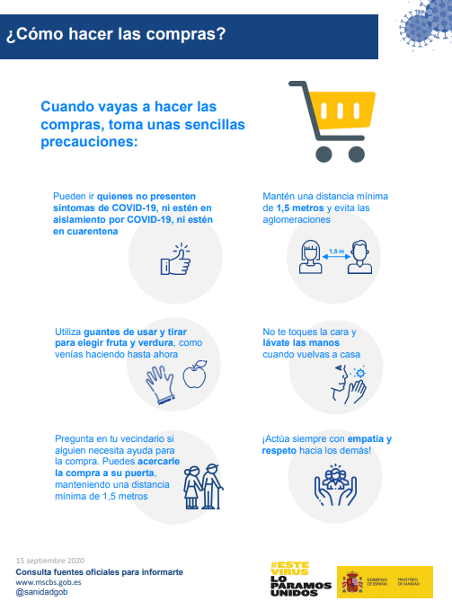

¿Los guantes son eficaces para protegerse del coronavirus?¿Son mejores los geles?
GTRESONLINE

Las dudas sobre el uso de guantes como medida de protección contra el coronavirus siguen estando presentes.¿Conviene no utilizarlos y hacer un mayor uso de los geles hidroalcohólicos?¿Son estos más eficaces que lavarnos las manos con agua y jabón?Para responder a todas estas preguntas que podemos hacernos es necesario tener en cuenta algunos aspectos esenciales.
Esto es lo que afirma de manera contundente la Organización Mundial de la Salud (OMS) y es que los guantes no son una forma de protección frente al coronavirus.Pues, como indica, 'si uno se toca la cara mientras los lleva, la contaminación pasa del guante a la cara y puede causar la infección'.
¿Esta afirmación significa que utilizar guantes no es necesario?Para nada.Los guantes desechables son esenciales para elegir la fruta y la verdura que se compre en el supermercado.Por lo tanto, el Gobierno de España recomienda utilizarlos siempre y cuando se vayan a comprar estos productos.
Asimismo, en los centros de trabajo el Gobierno también explica la idoneidad del uso de guantes, sobre todo, para el personal encargado de la limpieza de los diferentes departamentos.Su utilización dependerá de las medidas de riesgos laborales que se apliquen a las empresas y de los requisitos de protección contra el coronavirus que desde el Ministerio de Sanidad les hayan recomendado.
Con todo, los guantes pueden evitar la aparición de alergias en la piel por el uso abusivo del gel desinfectante.Este sí evita el contagio por coronavirus, pero en algunas empresas puede que se tenga que hacer un uso frecuente de este producto.De hecho, puede favorecer la aparición de una dermatitis.
Al utilizar los guantes evitamos que el gel entre en contacto con la piel y que podamos usarlo todas las veces que sean necesarias sin agredirla.En otras situaciones, como salir a pasear, coger el coche o hacer ejercicio, lo fundamental es no tocarse la cara y lavarse las manos con frecuencia.
El uso de los geles no exime de la utilización de los guantes en las situaciones mencionadas.No obstante, sí es cierto que los geles protegen frente al coronavirus porque desinfectan las manos, algo que los guantes no hacen.De hecho, los guantes son como una segunda piel y las posibilidades de contagio siguen estando presentes si nos tocamos la cara con las manos.
Sin embargo, si no nos encontramos en una situación en la que nos sea imposible lavarnos las manos con agua y jabón, es mejor esta opción antes que utilizar geles hidroalcohólicos.Aunque, su uso adecuado no tiene por qué provocar ninguna alteración en nuestra piel.
Con todo esto, ¿son mejores los geles para protegernos del coronavirus?La respuesta es 'sí', tanto los geles como el agua y el jabón nos ayudan a mantener nuestras manos limpias.Pero, en las situaciones ya mencionadas y, sobre todo, si debemos abusar de los geles hidroalcohólicos, utilizar guantes es esencial.
Posted On: 2020-05-22T06:28:00
Content Date: 2020-05-22
Download Date: 2021-04-21
Document ID: L0C04AJJK